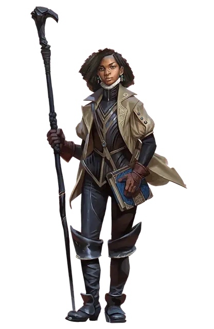

Ваджра Сафар
Vajra Safahr
Средний Гуманоид (Человек), законно-нейтральный, именной НИП

Класс Доспеха 14 (17 с доспехами мага)
Хиты 126 (23к8 + 23)
Скорость 30 футов
| мод | спас | ||
|---|---|---|---|
| СИЛ | 10 | +0 | +0 |
| ЛОВ | 14 | +2 | +2 |
| ТЕЛ | 12 | +1 | +1 |
| мод | спас | ||
|---|---|---|---|
| ИНТ | 20 | +5 | +10 |
| МДР | 11 | +0 | +5 |
| ХАР | 16 | +3 | +3 |
Навыки История +10, Магия +10
Чувства пассивное Восприятие 10
Языки Общий, Великаний, Дварфийский, Подземный, Полуросликов, Эльфийский
Опасность 13 (10000 опыта)
Бонус мастерства +5
Особенности
Особое снаряжение. Ваджра использует Чёрный посох, он учтён в её особенностях. Бросьте 2к10, чтобы определить, сколько зарядов осталось в посохе.
Сопротивление магии. Ваджра совершает с преимуществом спасброски от заклинаний и прочих магических эффектов.
Использование заклинаний. Ваджра является заклинателем 18-го уровня. Её базовой характеристикой является Интеллект (Сл спасброска от заклинания 18, +12 к попаданию атаками заклинаниями). У неё подготовлены следующие заклинания волшебника:
• Заговоры (неограниченно): огненный снаряд [fire bolt], свет [light], волшебная рука [mage hand], сообщение [message], фокусы [prestidigitation]
• 1 уровень (4 ячейки): обнаружение магии [detect magic], опознание [Identify], доспехи мага [mage armor], волна грома [thunderwave]
• 2 уровень (3 ячейки): невидимость [invisibility], туманный шаг [misty step], паутина [web]
• 3 уровень (3 ячейки): контрзаклинание [counterspell]ll, полёт [fly], послание [sending]
• 4 уровень (3 ячейки): изгнание [banishment], огненный щит [fire shield], каменная кожа [stoneskin]
• 5 уровень (3 ячейки): длань Бигби [Bigby’s hand], обет [geas], телекинез [telekinesis]
• 6 уровень (1 ячейка): пляшущая молния [chain lightning], сфера неуязвимости [globe of invulnerability]
• 7 уровень (1 ячейка): узилище [forcecage], радужные брызги [prismatic spray]
• 8 уровень (1 ячейка): преграда магии [antimagic field], слово силы: оглушение [power word stun]
• 9 уровень (1 ячейка): заточение [imprisonment].
Заклинания посоха. Удерживая Чёрный посох [Blackstaff], Ваджра может действием израсходовать 1 или более зарядов посоха, чтобы наложить одно из следующих заклинаний, используя свои Сл спасброска от заклинаний и бонус к попаданию атаками заклинаниями: конус холода [cone of cold] (5 зарядов), огненный шар [fireball] (версия 5-го уровня, 5 зарядов), сфера неуязвимости [globe of invulnerability] (6 зарядов), удержание чудовища [hold monster] (5 зарядов), левитация [levitate] (2 заряда), молния [lightning bolt] (версия 5-го уровня, 5 зарядов), волшебная стрела [magic missile] (1 заряд), луч слабости [ray of enfeeblement] (1 заряд) или силовая стена [wall of force] (5 зарядов) .
Действия
Чёрный посох. Рукопашная атака оружием: +7 к попаданию, досягаемость 5 футов, одна цель. Попадание: 5 (1к6 + 2) дробящего урона или 6 (1к8 + 2) дробящего урона, если используется двумя руками. При попадании Ваджра может израсходовать заряд посоха, чтобы дополнительно нанести 3 (1к6) урона силовым полем.
Описание
Эта талантливая волшебница — самая молодая из тех, кто занимал должность Чёрного Посоха, ей ещё не исполнилось и сорока. Как верховная волшебница Глубоководья, она обязана использовать всю доступную ей магию для защиты города от угроз. На эту должность её выбрал Келбен Эрансан, и она носит Чёрный посох Келбена, от которого и происходит название должности. Ваджра не самая могущественная волшебница в городе, но способна постоять за себя. Несмотря на одарённость, она сомневается, что справится с тяготами своей роли. Она редко принимает решения, не посоветовавшись с Чёрным посохом, где заключены духи Келбена и прочих её предшественников на посту. Ей также доставляют сведения из разных источников как её собственная сеть лазутчиков, так и агенты Арфистов.